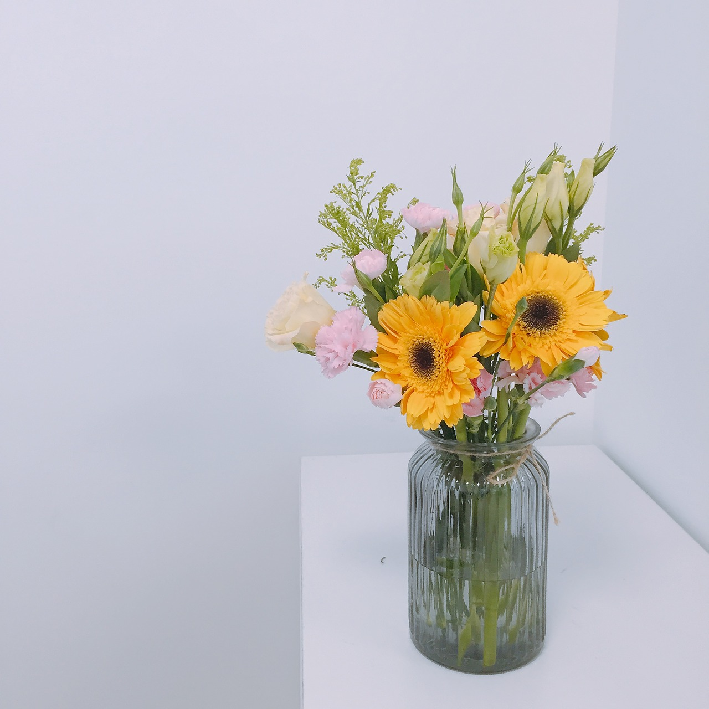

This is a browser based demo for generating image descrptions using a recurrent language model. The goal is to describe two objects and their relations. You need to choose an image from your local machine, and draw two bounding boxes to describe your intended objects, then the system is going to generate word sequences based on the bounding box arrangements, the visual features in object1/object2, and the contextual embeddings in the neural language model.
The model approximately is 60 MB. This application runs localy on your browser. You need Google Chrome to be able to proceed. There is no backend service (no image will be uploaded).
1. Choose a photo.
2. Draw bounding box for object1.
3. Draw bounding box for object2.
4. Repeat 2 and 3 until you are happy with bounding boxes.
5. Click on Generate button.
Drag & Drop Image
describe the man and his jacket
describe the candle and the apple
describe the suit case on the street

describe the vase on the table
For the convenience of the online demo, we used a pre-trained mobilenet to extract visual features. In addition to convolutional features, the bouning box arrangements are encoded as a vector of spatial features. Vectorisation of the spatial relation between bounding boxes is based on the method in Sadeghi et al. (2015). The neural networks in this demo all are built on python Keras, then ported for Tensorflow.js. The model is trained on 100K images from VisualGenome's relatinoships dataset with average 15 descrptions per image for 5 epochs with 80 batches.
The attention model is used to describe the grounding of each token in 4 possible features. Ghanimifard and Dobnik (2019).